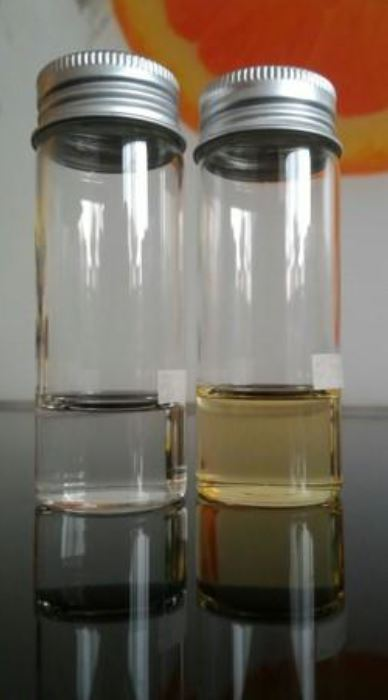

כימיה בחיי היום היום: האנומליה של המים
ביחידה זו:
- נשווה את הנפחים והצפיפויות של שמן ומים
- נכיר את תופעת האנומליה של המים
הקדמה
בדרך כלל, כאשר מקררים חומר כלשהו, החלקיקים המרכיבים אותו נעים לאט יותר, כתוצאה מכך הם הולכים ומתקרבים זה לזה. הולכים ומצטופפים עד אשר בטמפרטורה מסוימת החומר עובר ממצב צבירה נוזל למצב צבירה מוצק. ולכן לרוב ניתן להגיד שהצפיפות של חומר מוצק היא גדולה יותר מהצפיפות של הנוזל של עצמו )בפיזיקה - צפיפות מוגדרת ככמות חומר ליחידת נפח(. לכן, נצפה לכך שאם נקפיא חומר נוזל כלשהו, צפיפותו תעלה ונפחו יקטן
תצפית : נוזל ומוצק - השוואת נפחים
חומרים דרושים:
- 2 מיכלי זכוכית שקופים וצרים (אפשר לקנות בכל חנות יצירה)
- טוש או נייר דבר לסימון
- מים
- שמן
- מקפיא
מהלך הניסוי
- מלאו מעט מים ומעט שמן בכל אחד מהמיכלים.
- הניחו את הכלים על משטח אופקי (שיש או שולחן) וסמנו את גובה פני הנוזל בטוש או בנייר דבק.
- הכניסו את שני הכלים למקפיא, הקפידו שהם יישארו זקופים ככל האפשר.
- המתינו לפחות 24 שעות.
- הוציאו את המיכלים מהמקפיא ובדקו את הנפח של הקרח והשמן המוצק.
- העלו לפורום תמונה של תוצאות הניסוי שלכם, וספרו לנו מה קיבלתם!
מה קורה כאן? האנומליה של המים
התופעה המוזרה הזאת נקראת "האנומליה של המים" - מים שמתנהגים בצורה.... לא כל כך נורמלית.
כאשר מקררים מים נוזליים - נפחם הולך וקטן במעט, עד לטמפרטורה של °C4 בקירוב (עד כאן זה נורמלי וצפוי).
מנקודה
 זו והלאה חל מהפך לא צפוי: אם ממשיכים לקרר, נפח המים מתחיל לעלות שוב במקום
לרדת! המים מתפשטים במקום להמשיך להצטופף כמו כל שאר החומרים, עד שלבסוף כל
המים הופכים לקרח ב-°C0 .נפחו של הקרח גדול כמעט ב-%10 מנפח המים! זה לא נורמלי,
זה מנוגד להתנהגות של שאר החומרים בטבע, אצל כולם הנפח של המוצק קטן יותר מנפח
הנוזל.
זו והלאה חל מהפך לא צפוי: אם ממשיכים לקרר, נפח המים מתחיל לעלות שוב במקום
לרדת! המים מתפשטים במקום להמשיך להצטופף כמו כל שאר החומרים, עד שלבסוף כל
המים הופכים לקרח ב-°C0 .נפחו של הקרח גדול כמעט ב-%10 מנפח המים! זה לא נורמלי,
זה מנוגד להתנהגות של שאר החומרים בטבע, אצל כולם הנפח של המוצק קטן יותר מנפח
הנוזל.
תופעת האנומליה במים הינה בעלת השלכות רבות על כדור הארץ. זו הסיבה לכך שקרחונים צפים על פני הים ולא שוקעים לתחתית המצולות. גם כאשר אגמים קופאים עם בוא החורף, הקרח צף ומפריד בין המים שמתחתיו לסביבה החיצונית, ובכך מאפשר קיומם של חיים, כמו דגים במים שמתחת לשכבת הקרח.